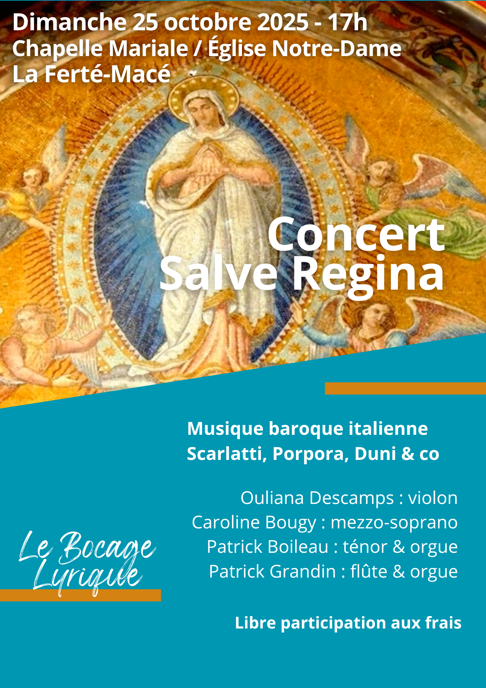

À la naissance du 18e siècle, Naples et Rome sont deux des centres les plus actifs de la création musicale en europe. L'italien s'est imposé comme langue commune des musiciens, notamment depuis l'invention de l'opéra au siècle précédent et les musiciens originaires de ce pays trouvent des places auprès de puissants mécènes dans toute l'europe.
C'est cependant sans quitter Naples qu'Alessandro Scarlatti, compositeur prolifique d'opéras, réussit à se bâtir une renommée internationale. Porpora, son élève, exporte quelques années plus tard le style innovant de Scarlatti dans toute l'europe à l'occasion de voyages réguliers et forme de nombreux chanteurs, dont le célèbrissime Farinelli.
Ces deux musiciens ne dédaignent cependant pas la composition de musique religieuse : naissent sous leurs plumes plusieurs oratorios – des opéras au livret religieux destinés à être interprétés pendant le Carême – ou de pièces isolées telles que les Salve Regina que vous entendrez ce soir.
Moins connu de nos jours que Porpora ou Scarlatti, Antonio Duni est le compositeur du troisième Salve Regina de ce programme. Issu d'une famille qui a donné nombre de musiciens, Antonion Duni a laissé peu de traces, et ce malgré une carrière qui l'a mené dans les plus grandes cours d'europe, dont la France.
Ces pièces vocales alterneront avec des sonates composées par des musiciens français contemporains : Jacques-Martin Hotteterre - dit « le Romain » depuis un séjour à Rome - compositeur d'origine normande, et Jacques-Christophe Naudot, tous deux remarquables flûtistes.
« Salut, ô Reine, mère de miséricorde ; notre vie, notre douceur et notre espérance, salut ! »
« Vers vous nous crions, pauvres exilés, fils d'Ève ; vers vous nous soupirons, gémissant et pleurant dans cette vallée de larmes. »
« Ô vous, notre avocate, tournez vers nous vos regards miséricordieux ; et après cet exil, montrez-nous Jésus, le fruit béni de vos entrailles. »
« Ô clémente, ô pieuse, ô douce Vierge Marie. »